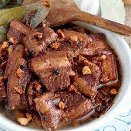

Adobo

Description
A dish that is classically and quintessentially Pinoy, adobo is a dish
that is beloved by many across the country. There are several variations
of adobo, dependeing on the region.
Ingredients
- 2kl pork liempo cut into serving pieces
- 3 pieces dried bay leaves
- 8 tablespoons soy sauce
- 4 tablespoons white vinegar
- 5 cloves garlic crushed
- 1 1/2 cups water
- 3 tablespoons cooking oil
- 1 teaspoon sugar
- 1/4 teaspoon salt
- whole peppercorn
Steps
-
Combine pork liempo, soy sauce, and garlic in a large bowl. Mix well.
-
Marinate the pork for at least 1 hour. Note: the longer the time, the
better.
-
Heat a cooking pot. Then, pour cooking oil. When the oil is hot enough,
pan-fry the marinated pork for 2 minutes per side.
- Pour-in the remaining marinade, including garlic.
-
Add water. Bring to a boil. Then, add dried bay leaves and whole
peppercorn. Simmer for 30 minutes or until the pork gets tender.
-
Add vinegar. Stir and cook for 10 minutes. Put-in the sugar, and salt.
- Stir and turn the heat off.